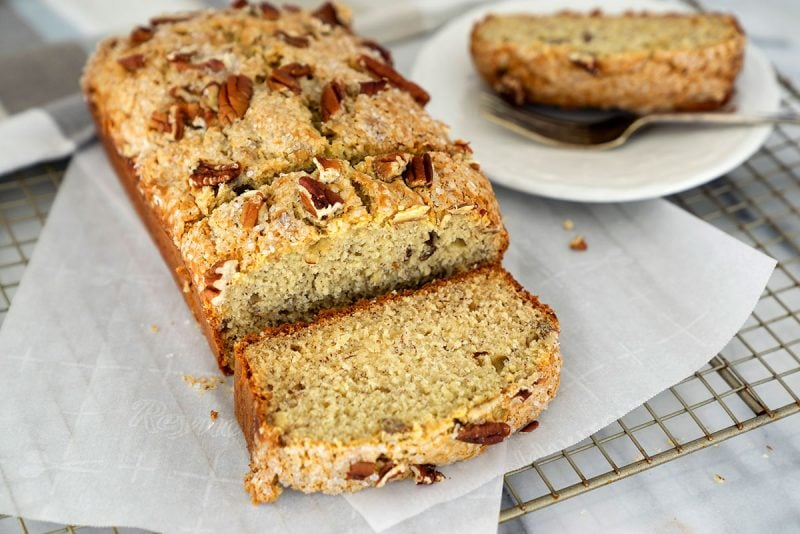

This banana bread is quick and easy to prepare, and everyone always comes back for seconds!
This delicious and easy banana bread recipe comes together quickly with budget-friendly ingredients you likely already have on hand.
You'll find a detailed ingredient list and step-by-step instructions in the recipe below, but let's go over the basics:
These are the basic ingredients you’ll need to make this easy banana bread recipe (you probably already have most of them in your kitchen):
Here’s a brief overview of what you can expect when you make this incredibly easy banana bread at home:
To store this easy banana bread: Place a paper towel at the bottom of an airtight container or in a zip-top bag. Place the cooled banana bread loaf on top of it, then cover the loaf with another paper towel. Seal the container tightly and store it at room temperature for about four days. You can freeze the banana bread for two to four months.
“Very good simple recipe,” according to one Allrecipes community member. “Sometimes less is more. Great flavor and texture. I went with dark brown sugar. Looking forward to adding spices and nuts. Perfect!”
“Easiest and best recipe I have ever used,” raves Anita Burian. “I made a large loaf the first time then started making mini loaves for gifting! Yummy!”
“I have used this recipe, faithful to the ingredients, for years and loved it,” says another Allrecipes community member. “Yesterday when I went to make it I didn't have butter so I used some of my roommate’s ghee... OMG!!!! That just took an already fantastic recipe to a new level.”
(per serving)
225 Calories
5g Fat
42g Carbs
3g Protein